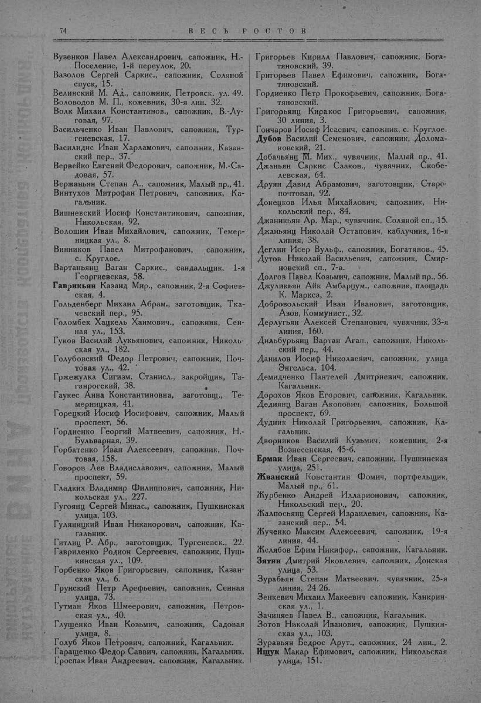

Лист источника 124
Скан

Распознанный текст
74 В Е С Ь Р О С Т О В
Вузенков Павел Александрович, сапожник, Н.-
Поселение, 1-й переулок, 20.
Вазолов Сергей Саркис., сапожник, Соляной
спуск, 15.
Велинский М. Ад., сапожник, Петровск. ул. 49.
Воловодов М. П., кожевник, 30-я лин. 32.
Волк Михаил Константинов., сапожник, В.-Лу-
говая, 97.
Васильченко Иван Павлович, сапожник, Тур-
геневская, 17.
Василидис Иван Харламович, сапожник, Казан-
ский пер., 37.
Вервейко Евгений Федорович, сапожник, М.-Са-
довая, 57.
Вержаньян Степан А., сапожник, Малый пр., 41.
Винтухов Митрофан Петрович, сапожник, Ка-
гальник.
Вишневский Иосиф Константинович, сапожник,
Никольская, 92.
Волошин Иван Михайлович, сапожник, Темер-
ницкая ул., 8.
Винников Павел Митрофанович, сапожник,
с. Круглое.
Вартаньянц Ваган Саркис., сандальщик, 1-я
Георгиевская, 58.
Гаврикьян Казанд Мир., сапожник, 2-я Софиев-
ская, 4.
Гольденберг Михаил Абрам., заготовщик, Тка-
чевский пер., 95.
Голомбек Хацкель Хаимович., сапожник, Сен-
ная ул., 153.
Гуков Василий Лукьянович, сапожник, Николь-
ская ул., 182.
Голубовский Федор Петрович, сапожник, Поч-
товая ул., 42.
Гржежулка Сигизм. Станисл., закройщик, Та-
ганрогский, 38.
Гаукес Анна Константиновна, заготовщ., Те-
мерницкая, 41.
Горецкий Иосиф Иосифович, сапожник, Малый
проспект, 56.
Гордиенко Георгий Матвеевич, сапожник, Н.-
Бульварная, 39.
Горбатенко Иван Алексеевич, сапожник, Поч-
товая, 158.
Говоров Лев Владиславович, сапожник, Малый
проспект, 59.
Гладких Владимир Филиппович, сапожник, Ни-
кольская ул., 227.
Гугоянц Сергей Минас., сапожник, Пушкинская
улица, 103.
Гуляницкий Иван Никанорович, сапожник, Ка-
гальник.
Гитлиц Р. Абр., заготовщик, Тургеневск., 22.
Гавриленко Родион Сергеевич, сапожник, Пуш-
кинская ул., 109.
Горбенко Яков Григорьевич, сапожник, Казан-
ская ул., 6.
Грунский Петр Арефьевич, сапожник, Сенная
улица, 73.
Гутман Яков Шмеерович, сапожник, Петров-
ская ул., 40.
Глущенко Иван Козьмич, сапожник, Садовая
улица, 8.
Голуб Яков Петрович, сапожник, Кагальник.
Гаращенко Федор Саввич, сапожник, Кагальник.
Гроспак Иван Андреевич, сапожник, Кагальник.
Григорьев Кирилл Павлович, сапожник, Бога-
тяновский, 39.
Григорьев Павел Ефимович, сапожник, Бога-
тяновский.
Гордиенко Петр Прокофьевич, сапожник, Бога-
тяновский.
Григорьянц Киракос Григорьевич, сапожник,
30 линия, 3.
Гончаров Иосиф Исаевич, сапожник, с. Круглое.
Дубов Василий Семенович, сапожник, Долома-
новский, 21.
Добачьянц М. Мих., чувячник, Малый пр., 41.
Джаньян Саркис Сааков., чувячник, Скобе-
левская, 64.
Друян Давид Абрамович, заготовщик, Старо-
почтовая, 92.
Донецков Илья Михайлович, сапожник, Ни-
кольский пер., 84.
Джаникьян Ар. Мар., чувячник, Соляной сп., 15.
Джаньянц Николай Остапович, каблучник, 16-я
линия, 38.
Деглин Исер Вульф., сапожник, Богатянов., 45.
Дутов Николай Васильевич, сапожник, Смир-
новский сп., 7-а.
Долгов Павел Козьмич, сапожник, Малый пр., 56.
Джуликьян Айк Амбарцум., сапожник, площадь
К. Маркса, 2.
Добровольский Иван Иванович, заготовщик,
Азов, Коммунист., 32.
Дерлугьян Алексей Степанович, чувячник, 33-я
линия, 160.
Дильбурьянц Вартан Агап., сапожник, Николь-
ский пер., 44.
Данилов Иосиф Николаевич, сапожник, улица
Энгельса, 104.
Демидченко Пантелей Дмитриевич, сапожник,
Кагальник.
Дорохов Яков Егорович, сапожник, Кагальник.
Дедиянц Ваган Акопович, сапожник, Большой
проспект, 69.
Дудник Николай Григорьевич, сапожник, Ка-
гальник.
Дворников Василий Кузьмич, кожевник, 2-я
Вознесенская, 45-б.
Ермак Иван Сергеевич, сапожник, Пушкинская
улица, 251.
Жванский Константин Фомич, портфельщик,
Малый пр., 61.
Журбенко Андрей Илларионович, сапожник,
Никольский пер., 20.
Жалпосьянц Сергей Израилевич, сапожник, Ка-
занский пер., 54.
Жученко Максим Алексеевич, сапожник, 19-я
линия, 44.
Желябов Ефим Никифор., сапожник, Кагальник.
Зятин Дмитрий Яковлевич, сапожник, Донская
улица, 53.
Зурабьян Степан Матвеевич, чувячник, 25-я
линия, 24 26.
Зенкевич Михаил Макеевич сапожник, Канкрин-
ская ул., 1.
Зачиняев Павел В., сапожник, Кагальник.
Зотов Николай Иванович, сапожник, Пушкин-
ская ул., 103.
Зуравьян Бедрос Арут., сапожник, 24 лин., 2.
Ищук Макар Ефимович, сапожник, Никольская
улица, 151.